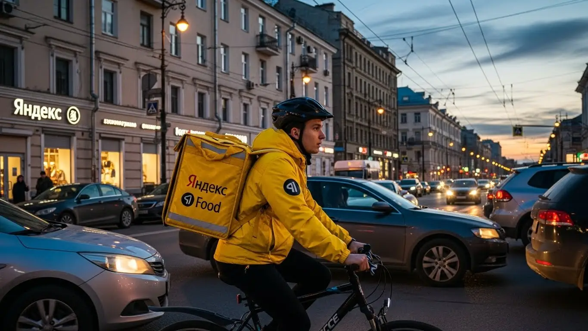
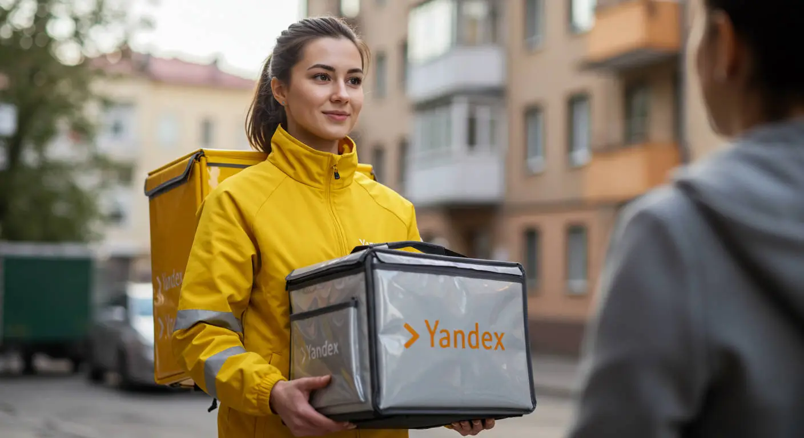

Сколько зарабатывает курьер Яндекс Еда в Калуге в 2025-2026
- Работа курьером Яндекс Еды в Калуге: для кого эта вакансия и что вы получите
- Сколько вы будете зарабатывать курьером в Калуге: калькулятор дохода и разбор выплат
- Реальный заработок курьера в Калуге: смены и месячный доход
- График работы и форматы занятости
- Требования к кандидату и документы
- Самозанятость, налоги и юридическая чистота
- Пошаговое оформление и первый выход на линию в Калуге
- Пешком, на вело или на авто: что выгоднее в Калуге
- Районы, маршруты и «топовые» зоны заказов в Калуге
- Безопасность, страховка, штрафы и оплата простоя
- Плюсы и возможные минусы работы курьером в Калуге
- Реальные истории и отзывы курьеров из Калуги
- FAQ: Ответы на главные вопросы о работе курьером в Калуге
- Короткие ответы на главные вопросы
- Итоги и ваш следующий шаг
Все города
Думаешь, работа курьером в Калуге — это легкие деньги на свободном графике? Видишь рекламу и представляешь, как гоняешь по городу, а на карту капает зарплата? Я тоже так думал, пока не столкнулся с калужскими пробками на Гагарина, убитыми дорогами в спальниках и заказами в частный сектор в метель. Этот гайд — не рекламный буклет. Это честный разговор о том, что на самом деле представляет собой работа курьером Яндекс Еда в Калуге, с реальными цифрами, проблемами и лайфхаками, которые сэкономят тебе кучу нервов и денег.
Потому что рекламные обещания про «до 100 тысяч в месяц» разбиваются о калужскую реальность уже через неделю. Никто не расскажет тебе заранее, сколько реально съест бензин или амортизация велосипеда, как работает система приоритетов, и почему в одном районе ты будешь сидеть без заказов, а в другом — не успевать их развозить. Одно дело — крутить педали по ровному центру, и совсем другое — тащить заказ на Правый берег или мотаться по Малинникам в час пик. Большинство новичков у нас в городе наступают на одни и те же грабли, разочаровываются и уходят, так и не поняв, как здесь можно нормально зарабатывать.
Здесь мы честно разберём, на чём выгоднее работать в Калуге — на своих двоих, велосипеде или авто. Посчитаем, сколько реально чистыми выходит в час, в день и в месяц после вычета всех расходов и налогов. Я покажу на карте самые «хлебные» районы и часы пик, расскажу, как погода и сезоны влияют на заказы, и как не нарваться на штрафы, которые съедят весь твой дневной заработок. Если вы хотите сразу увидеть краткую сводку условий и подать заявку, вся актуальная информация про работу курьером Яндекс Еда в Калуге доступна на официальной странице для партнёров. Мы сравним условия в Яндекс Еде и Лавке, чтобы ты понял, что подходит именно тебе. Никакой воды — только факты и опыт.
Меня зовут Алексей. Я сам не один год откатал с желтым рюкзаком по Калуге, а сейчас у меня свой небольшой таксопарк-партнёр, так что я вижу всю эту кухню с двух сторон. Я знаю, где система помогает, а где её нужно обхитрить, где можно заработать, а куда лучше не соваться. Я не буду тебе ничего «впаривать». Моя задача — дать тебе полную картину, чтобы ты принял взвешенное решение. Так что усаживайся поудобнее, сейчас всё разложу по полочкам.
Чтобы тебе было проще сориентироваться, мы подготовили короткий гид по ключевым темам статьи.
Главные вопросы о работе курьером в Калуге: разбираем по косточкам
В этой статье ты ТОЧНО узнаешь:
- Сколько реально можно заработать в Калуге за смену пешком, на велосипеде и на авто, и как погода влияет на доход?
- В каких районах Калуги больше всего заказов и как выбирать «хлебные» слоты, чтобы не сидеть без дела?
- За что на самом деле могут снизить рейтинг или применить санкции, и как работает бесплатная страховка на смене?
- Как за 15 минут оформить самозанятость и почему без этого статуса не получится работать?
- Что выгоднее для Калуги — работать в центре пешком или гонять на велосипеде по спальникам вроде Правого берега?
- Что такое «оплата простоя» и как она защищает твой заработок, если заказов вдруг стало мало?
А если тебе некогда читать всю статью — переходи сразу к заключению, где ты найдёшь короткие ответы на все эти вопросы и указания, в каких разделах искать подробности.
А вот основные цифры и факты о работе курьером в Калуге в одной картинке.
Работа курьером в Калуге: ключевые цифры
Доход в час
350 – 550 ₽
В часы пик, с учетом бонусов и коэффициентов
За смену (8-10 часов)
3 000 – 4 500 ₽
Зависит от района, погоды и количества заказов
Чаевые от клиентов
до +15%
Дополнительно к доходу, полностью остаются у вас
Свободный график
от 2 часов
Выбирайте удобные слоты и совмещайте с учебой
Работа курьером Яндекс Еды в Калуге: для кого эта вакансия и что вы получите
Кому подойдёт эта работа в Калуге
Эта вакансия — настоящий конструктор. Если ты студент калужского вуза или колледжа, сможешь легко совмещать смены с учёбой — выходишь на пару часов после пар и зарабатываешь на свои расходы. Если ищешь подработку к основной работе, чтобы закрыть кредит или просто иметь больше свободных денег, вечерние слоты или работа на выходных — твой вариант. Никакого специального опыта не требуется, всему научат за полчаса, так что это отличный старт для тех, кто раньше нигде не работал.
Для водителей на своем авто это тоже хороший вариант. Если ты таксуешь или просто много времени проводишь за рулём, можно подключиться к доставке Яндекс Еды и выполнять заказы по пути или в часы, когда в такси затишье. Главное, что здесь ценят — это твоё время и ответственность. А благодаря ежедневным выплатам ты видишь результат своего труда сразу, а не ждёшь зарплату месяц.
Главные преимущества для жителей районов Правый берег, Тайфун, Кубяка
Одно из главных удобств — возможность работать рядом с домом. Тебе не нужно тратить час-полтора на дорогу до «офиса». Живёшь, например, на Правом берегу — можешь выбрать эту зону в приложении «Яндекс Про» и доставлять заказы в своём же районе. Там много новостроек и молодых семей, поэтому спрос стабильный.
То же самое касается и других крупных спальных районов Калуги, таких как Тайфун или Кубяка. Везде есть свои точки притяжения: торговые центры, кафе, рестораны, магазины. Ты начинаешь смену буквально выйдя из подъезда, экономишь время и силы, а работаешь на знакомых улицах, где знаешь каждый двор. Это сильно упрощает жизнь и делает работу комфортнее.
Краткое обещание по доходу и условиям
Давай по-честному, о деньгах. В Калуге при полной занятости (8–10 часов в день) курьеры в среднем зарабатывают от 50 000 до 85 000 рублей в месяц. Если выходить на подработку на 3–4 часа, можно рассчитывать на 20 000–30 000 рублей дополнительного дохода. За одну полную смену выходит примерно 2500–4000 рублей, в зависимости от транспорта и спроса.
Ключевые условия работы простые и прозрачные. Во-первых, свободный график — ты сам решаешь, когда и сколько работать. Во-вторых, ежедневные выплаты на карту. В-третьих, начать можно без опыта — всему научат на коротком онлайн-инструктаже. Для работы понадобится только смартфон и термокороб, который можно получить у партнёров сервиса. Важный момент: для получения выплат нужно оформить самозанятость, но это делается онлайн за 15 минут.
У меня есть знакомый парень, студент КГУ, живёт как раз на Правом берегу. Он выходит на смены на велосипеде 4-5 раз в неделю после учёбы, катается по 3-4 часа. Работает исключительно в своём районе, потому что знает его как свои пять пальцев. За вечер у него выходит в среднем 1200–1500 рублей. Деньги приходят на карту сразу, он их использует на повседневные расходы и не просит у родителей.
Краткий вывод: Работа курьером в Яндекс Еде в Калуге — это не про жёсткие рамки, а про гибкость. Она подходит и студентам, и тем, кому нужна подработка, и позволяет работать в своём районе без долгих поездок. Совет: если ты новичок, начни работать в знакомом тебе районе. Так ты будешь чувствовать себя увереннее и быстрее выполнять заказы, пока не привыкнешь к приложению и процессу.
Сколько вы будете зарабатывать курьером в Калуге: калькулятор дохода и разбор выплат
Из чего складывается доход курьера
Твой заработок — это не просто фиксированная ставка, а сумма нескольких составляющих. Во-первых, это базовая оплата за каждый выполненный заказ. Во-вторых, доплата за расстояние — чем дальше везти заказ от ресторана до клиента, тем больше денег ты получишь. Система всё считает автоматически, тебе не нужно замерять километраж.
Кроме того, есть повышающие коэффициенты. В часы пик (обед, ужин), в плохую погоду или в зонах с высоким спросом стоимость заказов умножается на определённый коэффициент. Также есть персональные бонусы за выполнение определённого числа заказов и чаевые от клиентов — они полностью твои. А главное — есть оплата простоя, если заказов мало, и возможная компенсация проезда на общественном транспорте для пеших курьеров на дальних заказах.
Как пользоваться калькулятором дохода
На сайте есть специальный калькулятор, который поможет прикинуть твой потенциальный доход. Пользоваться им просто. Сначала выбираешь свой город — Калуга. Затем указываешь тип доставки: пеший курьер, на велосипеде или на своём авто. После этого выставляешь, сколько часов в день и сколько дней в неделю планируешь работать.
На выходе калькулятор покажет примерный диапазон твоего заработка за день и за месяц. Важно понимать, что это прогноз, основанный на средних показателях по городу. Твой реальный доход может быть как выше, если будешь работать в часы с высокими коэффициентами, так и немного ниже. Но как ориентир для старта — это отличный инструмент.
Прикинь свой доход курьером в Калуге
Твой примерный доход в месяц:
64 000 ₽
Это примерный расчёт на основе средней ставки в Калуге (~400 ₽/час). Реальный доход зависит от спроса, бонусов и твоего графика.
Чтобы увидеть более точные цифры и сразу подать заявку, загляни на страницу про работу курьером Яндекс Еда в твоём городе — там есть все актуальные условия и анкета.
Примеры расчёта для пешего, вело- и авто‑курьера в Калуге
Чтобы было понятнее, вот несколько реальных сценариев для Калуги.
- Пеший курьер. Работает в центре, в районе улиц Кирова и Театральной. Выходит на 4-часовой слот в обеденное время. Заказы здесь короткие, но их много. За такую смену можно заработать 1300–1600 рублей.
- Велокурьер. Выбирает для работы спальные районы, например, курсирует между Тайфуном и Малинниками. Работает вечером, по 5–6 часов. На велосипеде он покрывает большие расстояния и выполняет больше заказов, чем пеший. Его доход за смену составит 1800–2300 рублей.
- Курьер на своем авто. Работает полный день, 8–10 часов. Он берёт заказы по всему городу, включая дальние доставки на Правый берег, в Анненки или даже в пригород. В плохую погоду его доход резко возрастает за счёт коэффициентов. За день он может заработать 3500–5000 рублей «грязными», из которых нужно вычесть расходы на бензин.
Мой товарищ, который раньше работал в такси, сейчас доставляет заказы на своей старенькой «Гранте». Он выходит на линию в пятницу вечером и на все выходные. Специально отслеживает в приложении «Яндекс Про» зоны с повышенным спросом — они подсвечиваются фиолетовым. В прошлую дождливую субботу он за 9 часов работы сделал 4800 рублей. На бензин ушло около 600 рублей, чистыми осталось больше 4000. Он говорит, что главный секрет — не бояться дальних заказов и плохой погоды.
Краткий вывод: Твой заработок в Яндекс Еде в Калуге напрямую зависит от выбранного транспорта, количества часов и умения ловить моменты высокого спроса. Система выплат прозрачна и состоит из множества компонентов, которые в сумме дают хороший доход. Совет: не игнорируй карту спроса в приложении «Яндекс Про». Работа в «фиолетовых» зонах может увеличить твой дневной заработок на 20–30% без дополнительных усилий.
Реальный заработок курьера в Калуге: смены и месячный доход
Диапазон дохода для подработки и полной занятости
Давай сразу к цифрам. Сколько реально можно заработать курьером в Калуге — главный вопрос для всех, кто рассматривает эту вакансию. Ответ зависит от того, сколько ты готов работать и на чём передвигаться. Условия работы в Яндексе позволяют выбрать один из двух форматов: подработка для совмещения и полная занятость.
Если ты ищешь подработку, выходя на линию на 2–4 часа в день после основной работы или учёбы, цифры будут примерно такие. Пеший курьер или велокурьер в Калуге за короткую смену может заработать 800–1500 рублей. В месяц это выливается в 15 000–25 000 рублей. На своём авто за то же время выйдет больше, около 1200–2000 рублей за смену, или 20 000–35 000 в месяц. Это хорошая прибавка к основной зарплате или стипендии, которой хватит на карманные расходы, оплату кредита или накопления.
При полной занятости, когда ты работаешь по 8–10 часов в день, доход совсем другой. Пеший или велокурьер стабильно делает 2500–4000 рублей в день. В месяц это уже серьёзная зарплата в 50 000–75 000 рублей. Водитель-курьер на своём авто при полной загрузке в Калуге может зарабатывать от 3500 до 5500 рублей в день и больше. Месячный доход тут достигает 70 000–100 000 рублей и выше, но не забывай вычитать из этой суммы расходы на бензин и обслуживание машины.
Как район, время суток и погода влияют на доход
Твой заработок курьером — это не просто ставка за час. Он постоянно меняется, и на него влияют три фактора: место, время и погода за окном. Если понимать эту механику, можно увеличить доход на 20–30%, не работая дольше.
Во-первых, время. В Калуге, как и везде, есть пиковые часы: обед с 12:00 до 14:00 и ужин с 18:00 до 21:00. В это время заказов из ресторанов и кафе становится очень много, и в приложении «Яндекс Про» целые районы подсвечиваются фиолетовым — это зоны с повышенным коэффициентом. Работать в выходные тоже выгоднее, особенно в пятницу и субботу вечером.
Во-вторых, погода. Как только в Калуге начинается дождь, сильный снегопад или жара, происходит две вещи: люди ленятся выходить из дома и заказывают доставку еды, а количество курьеров на линии уменьшается. Спрос резко растёт, предложение падает — и коэффициенты взлетают. В такие дни можно за пару часов заработать как за половину обычной смены. К тому же, в плохую погоду клиенты чаще оставляют хорошие чаевые, ценя твою работу.
Наконец, район. В центре, на улицах Кирова, Театральной и Ленина, заказы есть почти всегда — там полно кафе и офисов. Днём выгодно находиться рядом с бизнес-центрами, а вечером спрос смещается в спальные районы: Правый берег, Тайфун, Кубяка. Знание этих «рыбных мест» и умение вовремя между ними перемещаться — ключ к стабильно высокому доходу.
Советы по увеличению заработка от опытных курьеров
Просто выходить на линию и ждать заказов — не лучшая стратегия. Чтобы доход радовал, нужно подходить к работе с умом. Вот несколько проверенных советов от калужских курьеров, которые давно в теме.
Первое — планируй смены. Заранее бронируй в приложении «Яндекс Про» плановые слоты на самое выгодное время: вечера будней и выходные. Так у тебя будет гарантия работы и часто — минимальной оплаты, даже если заказов окажется мало.
Второе — не гоняйся за каждым «фиолетовым» пятном на карте. Иногда лучше остаться в чуть менее доходной, но стабильно загруженной зоне, которую ты хорошо знаешь, чем лететь через весь город на Правый берег ради одного заказа с высоким коэффициентом, а потом полчаса ждать следующего. Используй карту спроса в приложении для анализа, а не для бессмысленных гонок.
Третье — сочетай форматы, если есть возможность. В центре Калуги, где вечные пробки в час пик, курьер на велосипеде или самокате часто быстрее машины. А вот для дальних доставок, например, из центра в Анненки или на Силикатный, без авто не обойтись. И не забывай про вежливость: опрятный вид и доброжелательное общение с клиентом напрямую влияют на чаевые. Иногда за день только на них можно дополнительно заработать 300–500 рублей.
Вот реальный кейс. Мой знакомый, водитель-курьер, поначалу работал хаотично. Его средний заработок был 2500–3000 ₽ в день. Потом он пересмотрел подход: стал брать плановые слоты с 18:00 до 22:00 в будни и полный день в субботу, сконцентрировавшись на двух районах — Центре и Правом береге. В итоге его средний дневной доход вырос до 4000–4500 рублей, а в дни высокого спроса (плохая погода, праздники) доходит и до 6000 ₽.
Сравнение форматов занятости в Калуге
| Параметр | Подработка (2–4 часа/день) | Полная занятость (8–10 часов/день) |
|---|---|---|
| Средний доход (пеший/вело) | 800 – 1 500 ₽/смена | 2 500 – 4 000 ₽/день |
| Средний доход (авто) | 1 200 – 2 000 ₽/смена | 3 500 – 5 500+ ₽/день |
| Примерный месячный доход | 15 000 – 35 000 ₽ | 50 000 – 100 000+ ₽ |
| Кому подходит | Студентам, людям с основной работой | Тем, кто ищет основной источник дохода |
Как видишь, твой заработок курьером в Калуге напрямую зависит от подхода. Можно просто кататься и получать средние деньги, а можно анализировать спрос, планировать смены и использовать погоду в свою пользу, чтобы зарабатывать значительно больше. Мой совет: в первый месяц попробуй разные слоты и зоны, чтобы понять, какие условия работы подходят именно тебе.
График работы и форматы занятости
Подработка после учёбы или основной работы
Свободный график — это, пожалуй, главный плюс работы курьером. Ты сам себе начальник и решаешь, когда выходить на линию. Это идеально подходит тем, кто ищет подработку, а не стандартную пятидневку. Есть два самых частых сценария.
Первый — для студентов. Учишься ты, например, в КГУ или «Бауманке». Днём пары, а вечером есть 3–4 свободных часа. Берёшь велосипед или просто выходишь пешком, включаешь «Яндекс Про» и работаешь в своём районе. Три-четыре таких вечерних смены в будни плюс один полный выходной могут приносить 20 000–25 000 рублей в месяц. Этого вполне хватит, чтобы покрывать свои расходы.
Второй сценарий — для тех, у кого уже есть основная работа с 9 до 18. После неё приезжаешь домой, ужинаешь и часов в 7 вечера выезжаешь на своей машине на 2–3 часа. Работаешь в самый пик вечернего спроса, развозя заказы из ресторанов через Яндекс Еду по спальным районам. Даже если выезжать так 3–4 раза в неделю и один день на выходных, можно легко добавлять к основной зарплате 30 000–40 000 рублей. Многие мои знакомые так закрывают кредиты или копят на отпуск.

Полная занятость: как выглядит типичный день курьера
Если ты рассматриваешь доставку как основную работу, твой день будет строиться вокруг пиков спроса. Типичный график курьера на полной занятости в Калуге выглядит примерно так. Утром, часов в 10–11, ты выходишь на линию. Сначала заказов может быть немного, это время для «раскачки». Ближе к 12:00 начинается обеденный пик, который длится до 15:00. В это время лучше всего работать в центре или рядом с крупными офисными зданиями, доставляя заказы из кафе.
После трёх часов дня наступает затишье. Опытные курьеры используют это время для отдыха, обеда или выполнения заказов «Яндекс Доставки» — они не такие срочные, как еда. Примерно с 17:30–18:00 начинается вечерний пик — самое прибыльное время. Спрос на доставку из Яндекс Еды смещается в спальные районы, и работа кипит до 21:00–22:00. После этого можно либо завершать смену, либо остаться на линии для ночных заказов, за которые часто доплачивают.
Такой «рваный» график позволяет не выматываться, работая 8 часов подряд без перерыва. Ты сам планируешь свои паузы, подстраиваясь под ритм города. Главное — быть на линии в те часы, когда заказов больше всего.
Как планировать слоты и выходы через приложение «Яндекс Про»
Вся работа курьера управляется через приложение «Яндекс Про». Там есть два основных режима выхода на линию: свободный и по запланированным слотам. Свободный выход означает, что ты можешь нажать кнопку «На линию» в любой момент. Это удобно, но не даёт гарантий по количеству заказов и доходу.
Плановые слоты — твой инструмент для стабильного заработка. Ты заранее выбираешь в приложении район и время, в которое будешь работать, например, с 18:00 до 22:00 на Правом берегу. Сервис видит, что ты готов работать, и будет приоритетно направлять заказы тебе. Часто на такие слоты действует гарантия минимального дохода. Самые выгодные слоты (вечерние и на выходные) разбирают быстро, так что планировать неделю лучше заранее.
Критически важно не опаздывать на начало планового слота. Если забронировал слот на 18:00, будь в выбранной зоне и готов принять заказ ровно в это время. Опоздания и частые отмены заказов негативно влияют на твой рейтинг Активности. А чем выше рейтинг, тем больше у тебя приоритет при распределении заказов. Проще говоря, дисциплина помогает получать больше выгодных заказов.
Вот пример из практики. Девушка-студентка сначала работала на свободном выходе, когда было настроение, и её заработок составлял 1500–2000 рублей в неделю. Потом она перешла на плановые слоты: стала бронировать три вечерних слота по 4 часа в будни и один 6-часовой в субботу. Её доход сразу стал предсказуемым и вырос до 4000–5000 рублей в неделю, потому что она всегда была в нужное время в нужном месте и получала бонусы.
Итак, работа курьером в Яндексе действительно предлагает свободный график, но эта гибкость требует самодисциплины. Чтобы хорошо зарабатывать, нужно не просто выходить на линию, а планировать свою работу через «Яндекс Про». Мой совет новичкам: начните с плановых слотов. Это поможет втянуться в ритм, понять, где и когда больше всего заказов, и обеспечит стабильный доход с первых дней.
Требования к кандидату и документы
Многие думают, что для работы курьером в Яндекс Еде нужна кипа бумаг и особые навыки. На деле всё гораздо проще. Давай по-честному разберём, какие условия и требования существуют на самом деле, чтобы начать работать курьером в Калуге. Они минимальные, и большинство документов у тебя, скорее всего, уже есть.
Возраст, гражданство и базовые условия
Начнём с основ. Чтобы стать курьером в сервисах Яндекса, тебе должно быть полных 18 лет. Это стандартное требование для заключения договора и полной материальной ответственности. По гражданству тоже всё просто: подойдёт паспорт РФ или гражданство одной из стран ЕАЭС — Беларусь, Казахстан, Армения и Киргизия.
Никаких сверхъестественных требований к физической форме нет. Если ты пеший или велокурьер, нужно быть готовым к активному движению в течение смены. Для водителя-курьера на своём авто главное — уверенно водить и хорошо ориентироваться в городе. Никто не ждёт от тебя олимпийских рекордов, важнее выносливость и готовность работать на ногах или за рулём несколько часов. Если ты можешь без проблем прогуляться по центру Калуги от парка Циолковского до ТРЦ «РИО», то и с пешими заказами справишься. Главное — адекватно оценивать свои силы, особенно в плохую погоду.
Какие документы нужны для работы курьером
Чтобы всё было официально и без проволочек, подготовь небольшой пакет документов. Это стандартный набор, который нужен для оформления в сервисах Яндекс Еда и Яндекс Доставка.
Вот что тебе понадобится:
- Паспорт. Основной документ для подтверждения личности и возраста. Нужен будет оригинал для сверки данных.
- ИНН. Идентификационный номер налогоплательщика необходим для регистрации в качестве самозанятого и уплаты налогов. Если не помнишь свой номер, его легко можно узнать за пару минут на сайте ФНС.
- Банковская карта. Нужна карта любого российского банка на твоё имя. На неё будут приходить ежедневные выплаты — это одно из главных преимуществ работы курьером в Яндексе. Подойдёт и МИР, и Visa, и Mastercard.
- Медицинская книжка. Для работы в Яндекс Еде с доставкой продуктов и готовых блюд медкнижка часто является обязательным требованием. Если у тебя её нет, не переживай — партнёры сервиса обычно помогают с её быстрым оформлением.
Собери эти документы заранее, и процесс подключения к сервису займёт минимум времени. Чем быстрее ты предоставишь все данные, тем быстрее сможешь выйти на свою первую смену и получить первый доход.
Можно ли работать с 16 лет и какие есть альтернативы
Частый вопрос от молодых ребят: можно ли устроиться в Яндекс Еду с 16 лет? Отвечаю честно: да, такая возможность есть, но с определёнными условиями. Если тебе 16 или 17 лет, ты можешь стать пешим курьером или велокурьером. Для этого потребуется письменное согласие одного из родителей или опекуна. Это не прихоть Яндекса, а требование Трудового кодекса РФ.
Для несовершеннолетних также действуют ограничения по графику. Ты не сможешь работать в ночные смены, а общая продолжительность рабочего времени в неделю будет сокращена (обычно не более 24 часов). А вот стать водителем-курьером можно строго с 18 лет, так как для этого нужны водительские права и стаж. Если по каким-то причинам работа курьером не подходит, подростки в Калуге могут рассмотреть другие варианты подработки, но доставка сегодня — один из самых гибких и доступных вариантов для старта без опыта.
Был у меня в парке парень, студент калужского филиала «Бауманки», 19 лет. Он долго тянул с оформлением, думал, что это муторно: справки, проверки, бюрократия. В итоге мы с ним сели, за 20 минут проверили все документы — паспорт, ИНН, реквизиты. Он был удивлён, что всё так просто. На следующий день он уже получил термокороб и вышел на свой первый слот в районе Московской площади. За 4 часа заработал около 1200 рублей и был очень доволен.
В общем, как видишь, пакет документов стандартный, а условия работы курьером вполне адекватные. Главное — твоё желание работать и зарабатывать. Если с документами всё в порядке, никаких преград для старта в Яндексе нет. Советую перед заполнением анкеты просто выложить паспорт и ИНН на стол, чтобы всё было под рукой.
Самозанятость, налоги и юридическая чистота
Многих новичков пугает слово «самозанятость». Кажется, что это что-то сложное, связанное с налогами и отчётами. На самом деле, это самый простой и легальный способ работать курьером и получать официальный доход. Давай разберёмся, почему это выгодно и как всё оформить за 10 минут, не выходя из дома.
Почему курьеры Яндекс Еды работают как самозанятые
Статус самозанятого (или налог на профессиональный доход, НПД) — обязательное условие для работы курьером в Яндекс Еде и Доставке. Этот формат был придуман специально для тех, кто сотрудничает с онлайн-платформами. Яндекс — крупная компания и не может платить деньги «в конверте», поэтому ей нужен официальный партнёр, и самозанятый курьер — идеальный вариант.
Во-первых, это твой официальный доход, который можно подтвердить для кредита или визы. Во-вторых, никакой сложной бухгалтерии: не нужно вести отчётность или сдавать декларации. В-третьих, всё происходит автоматически через приложения Яндекс Про и «Мой налог». Это легально, прозрачно и защищает тебя от претензий со стороны налоговой. Работать «в серую» сегодня — лишние риски и никакой стабильности.
Как за 10 минут оформить самозанятость через «Мой налог»
Зарегистрировать статус самозанятого проще, чем создать аккаунт в соцсети. Весь процесс занимает 10–15 минут и делается прямо с телефона.
Вот пошаговая инструкция:
- Скачай приложение «Мой налог». Оно есть в Google Play и App Store, это официальное приложение от ФНС России.
- Начни регистрацию. Открой приложение и выбери самый простой способ — «Регистрация по паспорту РФ».
- Отсканируй паспорт. Наведи камеру телефона на главный разворот паспорта. Приложение само распознает все данные. Проверь, чтобы всё было верно.
- Сделай селфи. Приложение попросит тебя сфотографироваться, чтобы подтвердить личность. Просто моргни на камеру, когда попросят.
- Подтверди регистрацию. Выбери свой регион — Калужская область. После этого придёт СМС с кодом подтверждения.
Вот и всё, ты официально стал самозанятым. Никаких поездок в налоговую и бумажной волокиты. Останется только привязать свой статус в приложении Яндекс Про, и можно начинать работать курьером.
Сколько и как платить налоги
Теперь о деньгах. Ставка налога для самозанятых курьеров — одна из самых низких в стране. Ты платишь 6% с доходов от юридических лиц (то есть от Яндекса и партнёров) и 4% с доходов от физлиц (например, если клиент оставил чаевые переводом).
Процесс уплаты налога полностью автоматизирован, тебе не нужно ничего считать самому. Приложение Яндекс Про передаёт данные о твоём доходе в налоговую. Раз в месяц, до 12-го числа, в приложении «Мой налог» появляется квитанция с итоговой суммой за прошлый месяц. Оплатить её можно там же, привязав банковскую карту, до 28-го числа. Это проще, чем платить за коммуналку.
Работая официально, ты спишь спокойно. Твой доход легален, налог минимальный, а весь процесс максимально упрощён. Это гораздо безопаснее и выгоднее, чем получать «серый» кэш и постоянно переживать.
Помню одного водителя-курьера, мужчина лет 45, всю жизнь работал неофициально на стройках в Калуге. Когда решил пойти в доставку Яндекса, больше всего боялся именно налогов и «этих ваших приложений». Мы помогли ему установить «Мой налог», он зарегистрировался за 10 минут. Когда в следующем месяце ему пришёл налог — около 3000 рублей с заработка в 50 тысяч — он даже удивился. Сказал, что если бы знал, что всё так просто и честно, давно бы перешёл на такой формат.
Так что не бойся этого статуса. Самозанятость — это современный инструмент, который делает твою работу курьером в Яндексе полностью официальной и прозрачной. Мой совет: оформляй сразу, как только решишь начать. Это снимет кучу вопросов и позволит сосредоточиться на главном — на заработке.
Пошаговое оформление и первый выход на линию в Калуге
Многих пугает процесс трудоустройства: кажется, что это долго, сложно, с кучей бумаг и собеседований. Забудь. Условия работы курьером в Яндексе устроены так, чтобы ты мог начать зарабатывать максимально быстро, буквально за день. Весь процесс отлажен и проходит онлайн, без лишней бюрократии. Главное — твоё желание, а система поможет с остальным.
Шаг 1–2: анкета и онлайн‑обучение
Всё начинается с простой анкеты на сайте. Никаких эссе на тему «почему я хочу стать курьером». Указываешь базовые данные: ФИО, номер телефона, город — Калуга. После этого тебе придёт ссылка на короткое онлайн-обучение. Это не нудные лекции, а несколько коротких видеороликов и тесты. Тебе объяснят основные стандарты сервиса: как общаться с клиентами и сотрудниками ресторанов, как правильно обращаться с заказом и пользоваться приложением «Яндекс Про».
Важный момент по возрасту: стать курьером на автомобиле можно строго с 18 лет. А вот пешим или велокурьером — уже с 16 лет. Для этого понадобится письменное согласие родителей, и можно будет работать ограниченное количество часов, как положено по закону для несовершеннолетних. Это отличная возможность для подработки старшеклассникам и студентам, чтобы заработать на свои цели.
Шаг 3: получение сумки и доступа к заказам в Калуге
Как только ты пройдёшь обучение и тесты, система даст добро на следующий этап — получение экипировки. Главный рабочий инструмент — это фирменная термосумка, или термокороб. Без неё работать нельзя, так как она сохраняет температуру еды. В Калуге получить её можно в партнёрском центре. Не нужно ничего искать самому — в приложении «Яндекс Про» появятся точные адреса и время работы точек выдачи.
Процесс простой: приходишь, показываешь в приложении, что ты прошёл обучение, и тебе выдают сумку. Иногда её могут даже доставить на дом. После того как ты получишь термокороб и активируешь его в приложении, тебе откроется полный доступ к заказам. С этого момента ты — полноценный доставщик.
Шаг 4: первый слот и первый доход
Теперь самое интересное. Открываешь «Яндекс Про», выбираешь на карте Калуги район, где хочешь работать, и свободный слот (промежуток времени для доставок). Новичку я советую не бросаться в омут с головой и не брать сразу 12-часовую смену. Начни с короткого слота на 3–4 часа в своём районе, который ты хорошо знаешь. Так ты спокойно разберёшься с приложением и процессом, не нервничая.
Выходишь на линию, и приложение начинает предлагать заказы. Принимаешь первый, идёшь в ресторан, забираешь пакет, отвозишь клиенту. Всё, первая доставка выполнена. Деньги за каждую доставку начисляются на твой баланс в приложении. Сервис предлагает ежедневные выплаты — заработок можно выводить на карту хоть каждый день. То есть, заполнив анкету утром, ты вполне реально можешь получить свой первый доход уже вечером.
Из практики: один студент из КГУ решил найти подработку. В понедельник вечером он заполнил анкету, во вторник утром, пока не было пар, прошёл онлайн-обучение. Днём заехал в офис партнёра на улице Кирова за термокоробом, а вечером уже вышел на пару часов в своём районе Терепец. За эти два часа он выполнил 4 заказа и получил свой первый доход — 700 рублей. Весь процесс от «хочу работать» до «получил первые деньги» занял меньше суток.
Как видишь, весь путь до первого заработка — это несколько простых шагов, которые можно пройти за один день. Не нужно бояться сложностей, их здесь нет. Главный совет для новичков: на первую смену выходи в хорошем настроении и не гонись за рекордами. Выбери знакомый район, возьми короткий слот и спокойно вкатывайся в работу.
Пешком, на вело или на авто: что выгоднее в Калуге
Выбор транспорта — это не просто вопрос удобства. В Калуге от этого напрямую зависит твой заработок, усталость и количество выполненных заказов. Город у нас неровный, с узким центром и широкими спальными районами, поэтому то, что идеально для одного квартала, будет совершенно невыгодно в другом. Давай разберёмся, какой формат под какие задачи подходит лучше всего.
Пеший курьер: для центра и плотной застройки в Калуге
Если ты планируешь работать в историческом центре Калуги — на улицах Театральная, Ленина, Кирова, Баумана — то формат пешего курьера может быть самым выгодным. Здесь сосредоточено множество кафе и ресторанов, подключенных к Яндекс Еде, а адреса доставки часто находятся в соседнем доме или через дорогу. Расстояния короткие, 1-2 километра максимум. На машине тут только мучиться: вечные пробки, проблемы с парковкой, одностороннее движение. Пешком ты срежешь путь через дворы, пройдёшь по пешеходной части Театральной и доставишь заказ быстрее любого водителя.
Этот формат идеален для подработки, не требует никаких вложений, кроме удобной обуви. Ты не зависишь от цен на бензин и пробок. Конечно, на дальние расстояния тебя не отправят, но в центре заказов всегда хватает, особенно в обеденное время и по вечерам. Это хороший старт, чтобы понять механику работы и заработать первые деньги без лишних затрат.
Велокурьер: быстрые доставки между спальными районами
Велосипед — это золотая середина, и, на мой взгляд, один из лучших вариантов для работы велокурьером в Калуге. Этот формат идеально подходит для крупных спальных районов, таких как Правый берег или Тайфун. Расстояния там уже приличные, пешком не набегаешься, а на машине можно встать в пробку на том же мосту через Оку или на улице Московской в час пик. Велосипед же позволяет быстро перемещаться между микрорайонами, объезжать заторы и доставлять заказы на 3-5 километров.
К тому же, это отличная экономия и польза для здоровья. Ты не тратишься на топливо и проезд, а по сути получаешь деньги за кардиотренировку. Для многих ребят это становится решающим фактором — «оплачиваемый фитнес». Если у тебя есть велосипед, ты можешь зарабатывать значительно больше пешего курьера, так как выполняешь больше заказов в час.
Водитель‑курьер: заказы по всему городу и пригороду Воротынска и Товарково
Работа водителем-курьером на своем авто — это инструмент для максимального заработка, но и с самыми большими расходами. На машине выгодно доставлять, если ты готов брать дальние заказы: например, из центра на окраину Малинников или с Правого берега в район Грабцево. Также только на авто доступны заказы в пригородные посёлки, такие как Воротынск, Товарково или Мстихино. Такие доставки оплачиваются значительно выше.
Особенно выгодно работать на автомобиле в плохую погоду. Когда льёт дождь или метёт снег, количество пеших и велокурьеров на линии резко сокращается, а спрос на доставку взлетает. В такие моменты коэффициенты могут быть очень высокими, и водитель-курьер за несколько часов может получить доход как за целый день в хорошую погоду. Но не забывай про расходы на бензин, амортизацию и обслуживание машины.
Мой знакомый, Игорь, начинал пешим курьером в центре. Зарабатывал стабильно, но был ограничен парой кварталов. Через месяц купил недорогой велосипед и стал брать смены на Правом берегу, где сам живёт. Его средний дневной доход вырос почти на 40%. Он стал успевать делать больше заказов за то же время и брать более дорогие доставки между разными частями района, куда пешком просто не дойти.
Сравнение форматов доставки в Калуге
| Параметр | Пеший курьер | Велокурьер | Водитель-курьер |
|---|---|---|---|
| Оптимальные зоны | Исторический центр (ул. Кирова, Театральная) | Крупные спальные районы (Правый берег, Тайфун, Кубяка) | Весь город, дальние районы, пригороды (Воротынск, Товарково) |
| Расходы | Минимальные (удобная обувь, проезд) | Обслуживание велосипеда | Бензин, амортизация, страховка |
| Потенциальный доход | Базовый | Средний / Высокий | Высокий / Максимальный |
| Главный плюс | Нет вложений, полезно для здоровья | Скорость, маневренность, экономия | Комфорт, дорогие заказы, работа в любую погоду |
| Главный минус | Низкая скорость, ограниченный радиус | Физическая нагрузка, зависимость от погоды | Расходы на авто, пробки, парковка |
В итоге, выбор транспорта зависит от твоих целей и района, где ты живёшь. Для подработки в центре Калуги хватит и своих ног. Для серьёзного заработка в спальных районах — велосипед будет лучшим другом. А если хочешь охватить весь город и пригород, без личного авто не обойтись. Мой совет: не зацикливайся на одном варианте. Многие опытные курьеры в Калуге летом работают на велосипеде, а зимой или в дождь пересаживаются на машину. Это позволяет им получать стабильно высокий доход в любое время года.
Районы, маршруты и «топовые» зоны заказов в Калуге
Чтобы в Калуге не просто кататься, а стабильно зарабатывать, нужно понимать, где и когда «клюёт». Город у нас не миллионник, но со своими особенностями: есть явные центры притяжения заказов, а есть тихие районы, где тоже можно неплохо работать, если знать как. Главное правило — не гоняться за одним заказом через весь город, а работать в зонах с постоянным потоком.
Ключ к стабильному доходу — это грамотное планирование. Перед выходом на смену всегда смотри карту в «Яндекс Про». Фиолетовые зоны — это места, где спрос сейчас выше обычного, а значит, действует повышающий коэффициент. Но не стоит слепо нестись в самый центр фиолетового пятна. Иногда выгоднее работать на его границе, выполняя больше коротких заказов, чем ждать один, но «дорогой».

Где больше всего заказов: ТРЦ, бизнес‑центры и туристические места
Самые прибыльные места, конечно, в центре и вокруг крупных торговых центров. Здесь всегда есть спрос, обеспечивающий хороший заработок: днём — от офисных работников, вечером и в выходные — от отдыхающих. В первую очередь обрати внимание на ТРЦ «Торговый квартал» на Московской и ТРЦ «РИО» на Кирова. Вокруг них сосредоточено огромное количество кафе и ресторанов, которые генерируют постоянный поток заказов.
Ещё одна золотая жила — деловой и исторический центр города. Улицы Кирова, Ленина, Театральная — здесь и офисы, и туристический трафик. В обеденное время (с 12:00 до 15:00) и вечером (с 18:00 до 21:00) здесь всегда повышенный спрос. Летом добавляются заказы из парка культуры и отдыха, люди заказывают еду прямо туда. Работа в этих зонах требует скорости, особенно от пеших и велокурьеров, так как курьеру на автомобиле бывает сложно парковаться.
Работа в своём районе: примеры для популярных жилых кварталов
Многие думают, что все деньги только в центре, но это не так. Работать в своём спальном районе часто бывает даже выгоднее, потому что ты экономишь время и бензин на дорогу. К тому же ты отлично знаешь все дворы и короткие пути. Например, Правобережье — огромный и постоянно растущий район. Здесь куча новостроек, а значит, много молодых семей, которые активно пользуются доставкой из местных магазинов, пиццерий и суши-баров.
Другие хорошие примеры — районы Кубяка и Терепец. Здесь тоже хватает и сетевых заведений, и небольших местных кафе. Вечерами и в выходные дни спрос стабильный. Ты можешь брать заказы из одного-двух заведений и развозить их по соседним домам, наматывая минимальный километраж. Это идеальный вариант для подработки: вышел из дома, отработал пару часов в своём квартале и получил деньги.
Как выбирать зоны и слоты в «Яндекс Про», чтобы не мотаться впустую
Приложение «Яндекс Про» — твой главный инструмент. Основа всего — карта спроса. Прежде чем бронировать слот или просто выходить на линию, открой её и посмотри, где сейчас «горит». Фиолетовые и красные зоны означают высокий спрос и повышенную оплату. Старайся планировать свои смены так, чтобы начинать их именно в таких зонах.
Планирование слотов заранее даёт преимущество. Ты можешь забронировать время в самой перспективной, на твой взгляд, зоне на пиковые часы. Но будь готов к тому, что ситуация меняется. Если видишь, что в твоей зоне заказов стало мало, а соседняя «покраснела» — есть смысл переместиться. Главное — не делать больших переездов ради одного заказа. Лучше сменить зону на 10–15 минут и работать там, где заказов много. Пустой пробег — главный враг твоего заработка.
Вот недавний пример из практики. Парень-велокурьер, студент, живёт на Правом берегу. Обычно катался у себя, делал по 3–4 заказа в час вечерами. Как-то раз увидел высокий коэффициент в центре, у ТРЦ «XXI век», и рванул туда. Потратил полчаса на дорогу, выполнил один очень выгодный заказ, а потом спрос упал. В итоге за 3 часа его доход оказался меньше обычного, потому что час он просто потерял на дорогу туда-обратно и ожидание. Мораль: стабильный поток заказов рядом с домом часто выгоднее погони за разовым «кушем».
В общем, чтобы зарабатывать в Калуге, нужно знать город и уметь пользоваться приложением. Самые денежные места — это центр и крупные ТРЦ, но и в спальных районах вроде Правобережья или Кубяки можно отлично работать. Мой главный совет: анализируй карту спроса, но не забывай про логистику. Иногда лучше сделать 10 коротких заказов в своём районе, чем два длинных через весь город.
Безопасность, страховка, штрафы и оплата простоя
Работа курьером, как и любая работа «в полях», связана с определёнными рисками. Ты постоянно в движении, на дороге, общаешься с разными людьми. Поэтому важно понимать, как ты защищён, какие правила нужно соблюдать, чтобы не нарваться на неприятности, и какие есть финансовые гарантии. Условия работы в Яндексе включают серьёзную поддержку, и это не просто слова.
Главное, что нужно усвоить: твоя безопасность — это в первую очередь твоя ответственность. Но сервис предоставляет инструменты, которые помогают чувствовать себя увереннее. Это и страховка, и круглосуточная поддержка, и чёткие правила работы. Если подходить к делу с головой, то риски можно свести к минимуму, а доход сделать стабильным.
Бесплатная страховка на сменах и что она покрывает
Один из самых важных моментов, о котором многие новички даже не знают, — это бесплатная страховка. Как только ты выходишь на запланированный слот, автоматически активируется страхование твоей жизни и здоровья. Это не фикция, а реальный рабочий инструмент, который покрывает несчастные случаи во время доставки. Сумма покрытия доходит до 2 миллионов рублей.
Что это значит на практике? Допустим, ты ехал на велосипеде, неудачно упал и сломал руку. Или, не дай бог, попал в ДТП на машине. В такой ситуации ты не остаёшься один на один с проблемой. Нужно сразу сообщить о случившемся в службу поддержки, они дадут инструкцию, как зафиксировать страховой случай. Страховка покроет расходы на лечение. Это огромное преимущество, которое даёт уверенность, что в сложной ситуации тебе помогут.
Правила безопасности на дороге и при доставке
Банальные вещи, но именно они спасают здоровье и деньги. Для каждого типа курьера есть свои нюансы. Если ты пеший — всегда переходи дорогу по «зебре», в тёмное время суток носи светоотражающие элементы. Если ты на велосипеде — шлем и фонари обязательны, не летай по тротуарам, распугивая пешеходов, и помни, что ты полноценный участник дорожного движения.
Для водителей-курьеров главное — не спешить. Лишние 5 минут не стоят риска ДТП. Паркуйся аккуратно, чтобы не мешать другим и не получить штраф. Вне зависимости от транспорта, будь особенно внимателен в плохую погоду — в дождь или гололёд видимость хуже, а тормозной путь длиннее. С самим заказом тоже аккуратнее: горячие напитки держи ровно, пиццу не переворачивай. Это не только сбережёт заказ, но и твой рейтинг.
Какие бывают штрафы и как их избежать
Слово «штраф» звучит пугающе, но на деле это скорее система мотивации и контроля качества. Никто не будет наказывать тебя за случайное опоздание на 5 минут из-за пробки. Санкции применяются за систематические или грубые нарушения. Например, если ты регулярно опаздываешь на слоты, грубишь клиентам, портишь заказы или вообще не выходишь на смену, не отменив её заранее.
Избежать этого просто: будь вежлив и относись к работе ответственно. Если понимаешь, что опаздываешь в ресторан или к клиенту, — напиши в чат поддержки, предупреди. Если с заказом что-то не так (упаковка повреждена) — сфотографируй и сообщи в поддержку сразу, как забрал его. Большинство проблем решаются через диалог. Главное — не игнорировать правила и не пытаться обмануть систему. Честная работа — лучшая защита от штрафов и блокировок.
Что такое оплата простоя и как она защищает твой доход
Это, пожалуй, одна из ключевых финансовых гарантий, которая отличает Яндекс от многих других сервисов. Оплата простоя, или минимальная гарантированная оплата, — это твоя страховка от отсутствия заказов. Если ты вышел на запланированный слот, находишься в нужной зоне, но заказов по какой-то причине мало, сервис всё равно начислит тебе деньги за это время по определённому тарифу.
Например, ты забронировал слот с 18:00 до 22:00 в зоне с гарантированным доходом 400 рублей в час. За час ты выполнил заказов только на 250 рублей. В этом случае система доплатит тебе 150 рублей, чтобы твой доход за этот час составил те самые 400. Это защищает твой заработок в «тихие» часы или в плохую погоду, когда люди меньше заказывают. Ты можешь быть уверен, что если уж вышел на работу, то не потратишь время впустую.
У меня в парке был случай. Водитель-курьер взял смену в понедельник днём, обычно это не самое активное время. За первые два часа ему упало всего три дешёвых заказа. Он уже начал нервничать, что зря потратит бензин. Но по итогу смены он посмотрел отчёт и увидел, что почти половину суммы ему доначислили по гарантии минимального дохода. В итоге он остался в плюсе и не пожалел, что вышел на линию.
Итак, работа курьером — это не только возможности, но и ответственность. Яндекс обеспечивает важную поддержку: бесплатную страховку на сменах и финансовую подушку в виде оплаты простоя. Штрафы есть, но их легко избежать, если работать по совести. Мой совет: всегда выходи на запланированные слоты. Так ты будешь защищён и страховкой, и гарантией минимального дохода, что делает работу гораздо спокойнее и стабильнее.
Плюсы и возможные минусы работы курьером в Калуге
Давай начистоту: любая работа — это не только деньги, но и свои особенности. Работа курьером в сервисах Яндекса — не исключение. Здесь есть как жирные плюсы, ради которых люди и приходят в эту сферу, так и моменты, к которым нужно быть готовым. Я расскажу честно, что тебя ждёт на улицах Калуги, чтобы ты мог взвесить все «за» и «против» без розовых очков.
Сильные стороны работы курьером в Калуге
Начнём с хорошего, его здесь действительно много. Во-первых, это гибкий график. Ты сам решаешь, когда работать: хочешь — выходишь на пару часов после основной работы или учёбы, хочешь — отрабатываешь полную смену. Слоты в приложении «Яндекс Про» можно планировать заранее, подстраивая под свою жизнь, а не наоборот. Никаких начальников, стоящих над душой, и обязаловки с 9 до 6.
Во-вторых, ежедневные выплаты. Это, пожалуй, один из главных козырей в условиях работы курьером Яндекса. Заработал сегодня — получил деньги на карту сегодня или на следующий день. Не нужно ждать аванса и зарплаты неделями. Кроме того, ты работаешь рядом с домом. Можно выбрать для старта свой район, будь то Правый берег, Кубяка или центр, и выполнять заказы в знакомых кварталах, не тратя время и деньги на дорогу через всю Калугу.
Ну и вишенка на торте — поддержка и страховка. На смене ты не один: в любой непонятной ситуации есть круглосуточный чат поддержки, а твоя жизнь и здоровье застрахованы. Работаешь ты официально как самозанятый, поэтому доход белый, а налог для самозанятых минимальный — всё по-честному.
С какими сложностями чаще всего сталкиваются курьеры
Теперь о том, к чему стоит быть готовым. Главный минус, о котором говорят новички, — физическая нагрузка. Особенно для пеших курьеров и велокурьеров. Целый день на ногах или в седле — это серьёзное испытание, особенно поначалу. Мой совет: начинай с коротких смен по 3–4 часа, носи удобную обувь и одежду, не пытайся ставить рекорды в первую неделю.
Вторая сложность — погода. Калужская зима со снегом и ветром или летний ливень — работать придётся в любых условиях. С другой стороны, в плохую погоду всегда включаются повышенные коэффициенты, заказов больше, и заработок ощутимо растёт. Главное — правильно экипироваться: непромокаемая куртка, термобельё и фирменный термокороб решают 90% проблем.
Иногда бывают простои, когда заказов мало. Но и тут сервис подстраховывает: в некоторых случаях действует минимальная гарантированная оплата за слот. Ну и, конечно, общение с разными клиентами. Большинство людей адекватны, но изредка попадаются и недовольные. Важно сохранять спокойствие, быть вежливым и в случае конфликта сразу писать в поддержку — они помогут разрулить ситуацию.
Кому такая работа подходит, а кому лучше поискать другой формат
Эта работа идеально подходит, если ты студент. Совмещать с учёбой в КГУ или любом другом вузе — проще простого. Даже если тебе 16–17 лет, по условиям Яндекса ты можешь работать пешим или велокурьером, получив согласие родителей. Также это отличный вариант для тех, кому нужна подработка к основной зарплате или временный источник дохода. Если ты активный человек и не можешь сидеть на одном месте, тебе здесь понравится. Это, по сути, оплачиваемый фитнес.
А вот кому стоит подумать дважды. Если у тебя есть серьёзные проблемы со здоровьем, которые мешают долго ходить или ездить на велосипеде, лучше поберечь себя. Если ты не выносишь нестабильности и тебе нужна твёрдая зарплата до копейки раз в месяц, плавающий доход курьера в Яндексе может нервировать. И, наконец, если тебе для работы нужен постоянный контроль и чёткие указания от начальника, здесь будет сложно. Курьер — сам себе босс, и это требует самодисциплины.
Реальные истории и отзывы курьеров из Калуги
Теория — это хорошо, но лучше всего о работе говорят реальные люди. Я собрал несколько коротких историй и отзывов от калужских курьеров, чтобы ты увидел картину изнутри. Это не выдуманные персонажи, а обычные парни и девчонки, которые каждый день доставляют заказы в нашем городе.
История студента КГУ им. Циолковского, который совмещает учёбу и доставку
«Меня зовут Максим, я на третьем курсе в КГУ. Живу на Правом берегу, там же обычно и начинаю смены. График строю просто: после пар выхожу на 3-4 часа, катаюсь на велосипеде. В основном работаю в своём районе или еду в центр, если там горят коэффициенты. В субботу стараюсь брать смену подольше, часов на 6-8. Для меня это идеальная подработка в Яндекс Еде. В среднем за неделю выходит 6-8 тысяч рублей. Этих денег с головой хватает на мои расходы, кафе, одежду, и не нужно просить у родителей. Главное — не лениться и выходить на линию регулярно, тогда и доход стабильный».
Опыт автокурьера, который выходит в пиковые часы
«Я работаю на своей машине в Яндекс Доставке, зовут меня Игорь. У меня есть основная работа со сменным графиком, поэтому полные дни кататься не могу. Выбрал для себя стратегию работы в пиковые часы: выхожу на обеденный спрос с 12 до 15 и на вечерний, с 18 до 22. В это время заказов валом, особенно из крупных ТЦ вроде "Торгового Квартала" или гипермаркета "Глобус". На машине удобно брать дальние доставки, например, с одного конца Калуги на другой, или несколько заказов сразу. За 4-5 часов в пиковое время я зарабатываю столько же, сколько пеший курьер за 8 часов. Меня такой формат полностью устраивает: минимум времени, максимум дохода».
Мнение пешего или вело‑курьера о работе в центре и спальниках
«Я Аня, катаюсь на велосипеде для Яндекс Еды уже второй сезон. По моему опыту, у каждого района Калуги своя специфика. В центре, на Кирова или Театральной, заказы сыплются один за другим, ресторанов море, а расстояния короткие. Минус — много людей, иногда сложно проехать, и не во всех старых домах есть лифты. В спальных районах, например, в Анненках или на Кубяке, всё спокойнее. Заказы могут быть реже, но зато маршруты свободнее, клиенты часто оставляют хорошие чаевые. Я обычно комбинирую: в обед работаю в центре, а вечером, когда люди заказывают ужины домой, перемещаюсь в спальники. Привыкнуть пришлось к калужским горкам, но зато ноги подкачала отлично!»
FAQ: Ответы на главные вопросы о работе курьером в Калуге
Собрал здесь ответы на те вопросы, которые мне задают чаще всего. Без воды, только по делу, чтобы у тебя сложилась полная картина об условиях работы.
Нужно ли оформлять самозанятость и как платить налоги?
Да, без статуса самозанятого (СМЗ) работать с Яндекс Едой напрямую нельзя. Не пугайся, это несложно и даже выгодно. Оформление занимает 10–15 минут через официальное приложение «Мой налог». Никуда ходить не нужно: скачал, сфотографировал паспорт, отправил заявку — и готово. Налог платится только с дохода и составляет 6% от поступлений от Яндекса. Приложение само всё считает, тебе остаётся только раз в месяц нажать кнопку «Оплатить».
Какой телефон и интернет нужны для работы курьером?
Для работы понадобится смартфон на базе Android версии не ниже 7.0. На айфонах приложение «Яндекс Про» не работает. Телефон нужен достаточно шустрый, с хорошим GPS-модулем для точного определения твоего местоположения и построения маршрутов. Интернет нужен стабильный, мобильный. И ещё один совет из практики: обязательно купи пауэрбанк. Приложение с включённым GPS быстро сажает батарею, а остаться без связи посреди смены — худшее, что может случиться.
Что будет, если в смену мало заказов — как работает оплата простоя?
Это одно из главных преимуществ работы в Яндексе. Если ты выходишь на запланированный слот (выбираешь заранее время и район), а заказов мало, сервис начисляет минимальную гарантированную оплату за час. То есть ты не будешь сидеть бесплатно в ожидании. Размер этой гарантии виден в приложении при выборе слота. Такая система защищает твой доход и делает условия работы более предсказуемыми.
Есть ли в Яндекс Еде штрафы и за что их могут применить?
Прямого понятия «штраф» в системе нет, но есть действия, которые могут повлиять на твой рейтинг или привести к временной блокировке. Это не способ отобрать деньги, а скорее система мотивации работать по стандартам сервиса. Например, могут ограничить доступ к заказам за серьёзные опоздания на слот, порчу заказа, грубость клиенту или частую отмену уже принятых заказов без веской причины. По своему опыту скажу: если работать нормально, не косячить и по-человечески относиться к клиентам и заказам, никаких проблем не будет.
Сколько реально можно заработать курьером в Калуге и чем эта вакансия лучше других сервисов?
Реальный заработок в Калуге зависит от тебя: как доставляешь, сколько часов работаешь. Пеший курьер на подработке (3–4 часа в день) может зарабатывать 1200–2000 рублей. Велокурьер за полный день (8–10 часов) спокойно вывозит 3000–4000 рублей. Автокурьеры зарабатывают больше всего, особенно на дальних заказах, — до 5000 рублей в день и выше. Главное отличие Яндекс Еды от других сервисов в Калуге — это огромная экосистема заказов (Еда, Лавка, Маркет), гарантированная оплата простоя и бесплатная страховка на время смен.
Можно ли работать без опыта и что будет на обучении?
Да, опыт работы не требуется. Это идеальный вариант для старта. Всё, что нужно знать, тебе расскажут на коротком онлайн-обучении. Это несколько видеороликов и небольшой тест в конце. На обучении объясняют, как пользоваться приложением «Яндекс Про», как правильно общаться с клиентами и какие есть стандарты сервиса. Всё просто и понятно, занимает буквально пару часов.
Берут ли с 16–17 лет и какие есть ограничения по возрасту?
Многих интересует, со скольки лет можно работать. В Яндекс Еду можно устроиться с 16 лет, но только пешим или велокурьером. Для этого понадобится письменное согласие одного из родителей или опекуна. Важно понимать, что для несовершеннолетних действуют ограничения по Трудовому кодексу: сокращённый рабочий день (не более 4–5 часов) и запрет на ночные смены. Курьером на автомобиле можно стать только с 18 лет при наличии водительских прав.
Короткие ответы на главные вопросы
Здесь мы собрали краткую шпаргалку по самым важным моментам из статьи, чтобы у тебя всё было под рукой.
Главное из статьи: короткие ответы на твои вопросы
Короткие ответы на ключевые вопросы
Сколько реально можно заработать в Калуге за смену пешком, на велосипеде и на авто, и как погода влияет на доход?
В среднем за полную смену (8-10 часов) пеший или велокурьер зарабатывает 2500–4000 ₽, а автокурьер — 3500–5500+ ₽. В плохую погоду (дождь, снег) включаются повышенные коэффициенты, и доход может вырасти на 20–30% и более.
→ Подробнее читай в разделе «Реальный заработок курьера в Калуге: смены и месячный доход».В каких районах Калуги больше всего заказов и как выбирать «хлебные» слоты, чтобы не сидеть без дела?
Максимум заказов в центре (улицы Кирова, Театральная) и у крупных ТРЦ («Торговый квартал», «РИО»). Вечером и в выходные спрос смещается в спальные районы (Правый берег, Кубяка). Выбирайте в приложении «Яндекс Про» плановые слоты в «фиолетовых» зонах с высоким спросом.
→ Подробнее читай в разделе «Районы, маршруты и «топовые» зоны заказов в Калуге».За что на самом деле могут снизить рейтинг или применить санкции, и как работает бесплатная страховка на смене?
Рейтинг снижают за систематические опоздания, порчу заказов или грубость клиентам, что может привести к временной блокировке. На время плановых смен все курьеры бесплатно застрахованы на сумму до 2 млн рублей на случай травм или ДТП.
→ Подробнее читай в разделе «Безопасность, страховка, штрафы и оплата простоя».Как за 15 минут оформить самозанятость и почему без этого статуса не получится работать?
Самозанятость — это обязательное условие для официальных выплат. Она оформляется за 10-15 минут через приложение «Мой налог» по паспорту. Это легальный способ работы с уплатой налога всего 6% с дохода от Яндекса.
→ Подробнее читай в разделе «Самозанятость, налоги и юридическая чистота».Что выгоднее для Калуги — работать в центре пешком или гонять на велосипеде по спальникам вроде Правого берега?
В центре с его пробками и плотной застройкой часто выгоднее быть пешим курьером. Для больших спальных районов (Правый берег, Тайфун) велосипед идеален — он быстрее пешехода и маневреннее авто. Автомобиль же незаменим для дальних заказов по всему городу и в пригород.
→ Подробнее читай в разделе «Пешком, на вело или на авто: что выгоднее в Калуге».Что такое «оплата простоя» и как она защищает твой заработок, если заказов вдруг стало мало?
Это гарантия минимального дохода за час на плановых слотах. Если вы выполнили заказов на сумму меньше гарантированной, сервис доплатит разницу. Это финансовая подушка безопасности, которая гарантирует, что ваше время на линии будет оплачено.
→ Подробнее читай в разделе «Безопасность, страховка, штрафы и оплата простоя».
Для полного понимания темы рекомендую прочитать всю статью — там ты найдёшь примеры, сравнения и дельные советы из практики.
Итоги и ваш следующий шаг
Краткие выводы по работе курьером в Калуге
Если коротко, работа курьером в Яндекс Еде в Калуге — это реальная возможность получать стабильный доход от 2500 до 5000 рублей в день при полной занятости. Это отличный вариант и для подработки, так как у тебя будет абсолютно свободный график. Ты сам решаешь, когда и сколько работать. Условия прозрачные: доход виден в приложении Яндекс Про, выплаты ежедневные, а такие вещи, как оплата простоя и страховка, защищают тебя от непредвиденных ситуаций.
По сравнению с другими вакансиями и вариантами подработки в Калуге, Яндекс предлагает стабильный поток заказов благодаря своей большой сети партнёров и понятную систему работы. Это не просто «беготня с пакетами», а вполне современный и технологичный способ заработка, доступный каждому, даже без опыта.
Как сделать первый шаг уже сегодня
Начать проще, чем кажется. Никакой бюрократии и долгих собеседований. Вот простой план:
- Заполни анкету. Это займёт 5–10 минут. Нужны базовые данные о себе.
- Подготовь документы. Тебе понадобятся паспорт, ИНН и реквизиты банковской карты, на которую будут приходить деньги. Если тебе 16–17 лет — ещё и согласие от родителей.
- Пройди онлайн-обучение. Посмотри короткие видео и ответь на несколько вопросов, чтобы подтвердить, что ты понял правила.
- Получи брендированный термокороб (термосумку) и выбери первый слот. После активации ты сможешь забрать оборудование, зайти в приложение «Яндекс Про», выбрать удобный район и время для старта. Первые деньги можно заработать уже на следующий день.